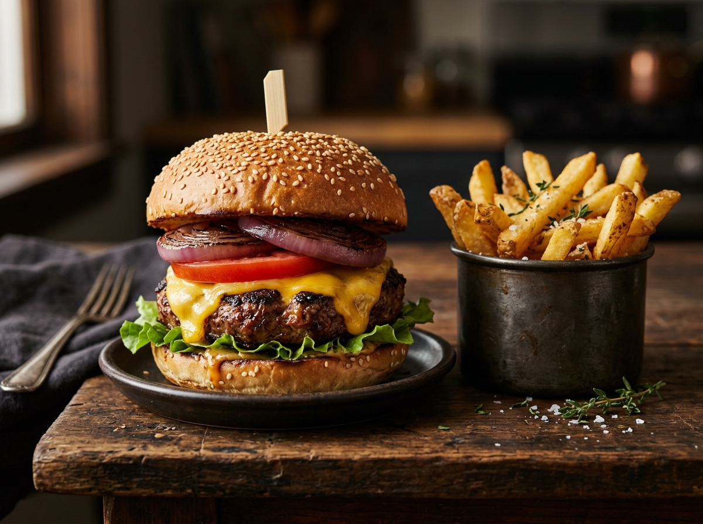

La Clásica
12 €180 g de ternera de la tierra, cheddar fundido, lechuga, tomate y salsa de la casa.

Restaurante familiar en el rural de Castellón
⚠️ Solo abrimos UNA NOCHE al año
Reserva tu mesaLa Finca Burger es una cosa de familia. En una finca perdida entre olivos y almendros del interior de Castellón, la familia monta un chiringuito una sola noche al año. Los nietos hacen las burgers, la abuela vigila la limonada, y el tío Paco enciende la parrilla como si fuera el último día.
No hay carta eterna, no hay horarios: hay una noche, unas cuantas burgers, unas bebidas frías y todo el pueblo (y quien se entere) alrededor de la mesa larga.
Tres burgers. Sin más. Como debe ser.

Cada año la fecha es un secreto a voces. Se avisa por el grupo de WhatsApp de la familia, se corre la voz en el pueblo y se acaba llenando la finca. Cuando se acaban las burgers, se acaban las burgers.
La fecha se confirma por boca a boca. No te la pierdas.
Mesa larga compartida. La reserva se hace por WhatsApp — sin pagos por adelantado, solo palabra de honor.
Reservar por WhatsAppFinca Burger · En algún lugar entre olivos y almendros · Castellón, España